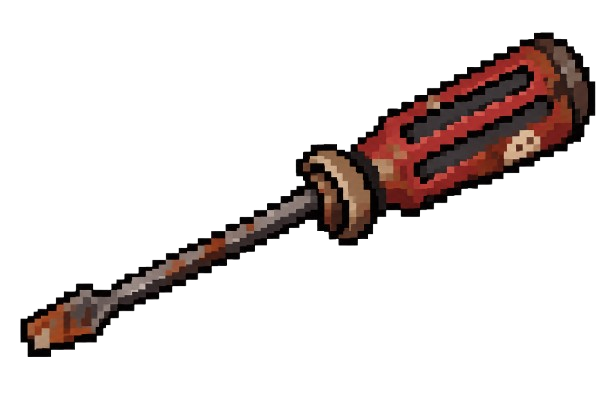
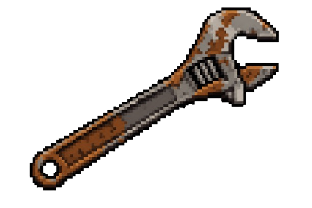
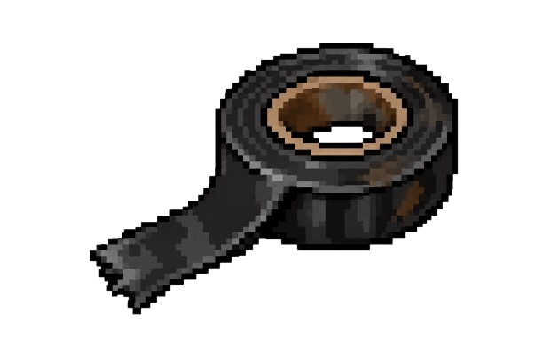
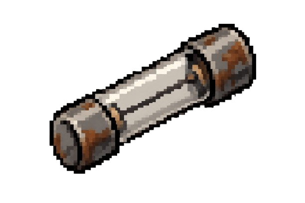
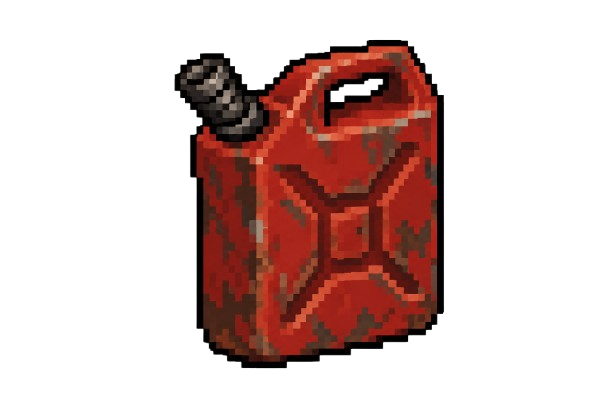

03 // INVENTÁRIO
Itens
Ferramentas e suprimentos que os moradores usavam para manter a casa, a rádio, a clínica e o cais funcionando.
INVENTÁRIO DA ZONA 04
Ferramentas e suprimentos
| Item | Descrição e localização | Usos | Consumo |
|---|---|---|---|
 Chave de FendaFERRAMENTA / ITM_001 |
Deixada sobre a bancada de apoio da casa 01. A ponta ainda está em boas condições. | Soltar as tábuas do tronco rachado, retirar os parafusos da proteção do motor e ajudar na montagem do barco. | Reutilizável; permanece no inventário. |
 Chave InglesaFERRAMENTA / ITM_002 |
Chave ajustável encontrada na bancada da oficina de Nilo, com marcas de graxa no cabo. | Soltar as porcas que prendem o motor e apertar as fixações do barco. | Reutilizável; permanece no inventário. |
 Fita IsolanteREPARO / ITM_003 |
Rolo guardado no armário de manutenção da rádio, ainda com material para um reparo. | Isolar o trecho danificado do cabo do guincho. | Uso único; consumida após um reparo. |
 Fusível de CartuchoENERGIA / ITM_004 |
Fusível de cerâmica encontrado no armário de manutenção da clínica. | Substituir o fusível queimado no painel do guincho. | Uso único; instalado no painel após o uso. |
 Galão de GasolinaCOMBUSTÍVEL / ITM_005 |
Galão de reserva guardado na oficina, ao lado dos materiais de manutenção do cais. | Abastecer o motor de popa antes da partida. | Uso único; removido quando esvaziado. |
| Nenhum item encontrado com esse termo. | |||
PROCEDIMENTO
Coletar não é o bastante.
Cada objeto precisa ter uma função clara: abrir algo, resolver um problema ou entregar uma informação.
- 01
Encontrar
Localize o objeto no cenário.
- 02
Inspecionar
Observe detalhes e possíveis pistas.
- 03
Relacionar
Descubra onde ou com o que ele pode ser usado.
- 04
Aplicar
Use ou combine quando a condição for satisfeita.